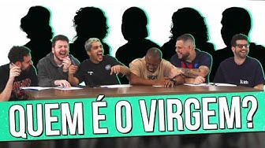

Campanhas
Chico Moedas participa de um dos maiores canais na plataforma do Youtube,aonde ele e mais alguns amigos realizam um quadro de quizz. Chico virou uma febre em todas redes sociais.

Home |
Biografia |
Campanhas |
Contatos |
Ele diz: "Saindo da faculdade, sabendo que precisava de dinheiro, cheguei no YouTube e comecei a ver vídeo de investimento mais tradicional, tesouro direto, etc, e vi um bagulho mais radical que era o bitcoin e ganhei dinheiro lá", contou em papo com Valentina Bandeira."
Mesmo afirmando que não curte muito essa rotina de trabalho, o rapaz participou da cobertura da Copa do Mundo 2022 realizada pelo Casimiro na Cazé TV